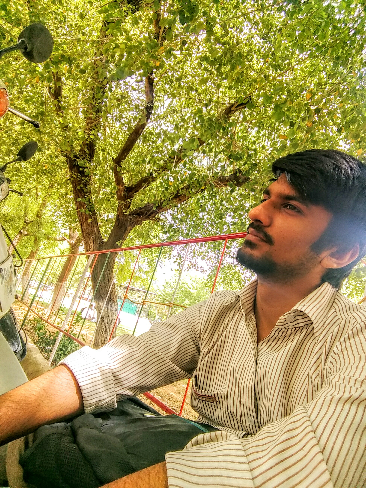

About Us
We created this project so that people can see landscape changes in India over the past few years. We have used bhuvan maps , which is created by India Space and Research Organization (ISRO) and used images available in bhuvan. This project shows landscape changes which have occured over a recent years in Indian landscape
Our Team
Dr. Vinod M Bothale
(Project Guide)
Group Director, Geoportals and Web GIS Services.
NRSC (National Remote Sensing Center, India)

Harsh Manwani
